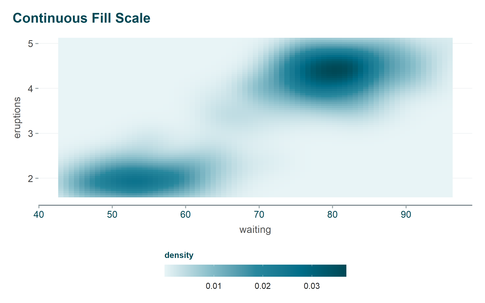
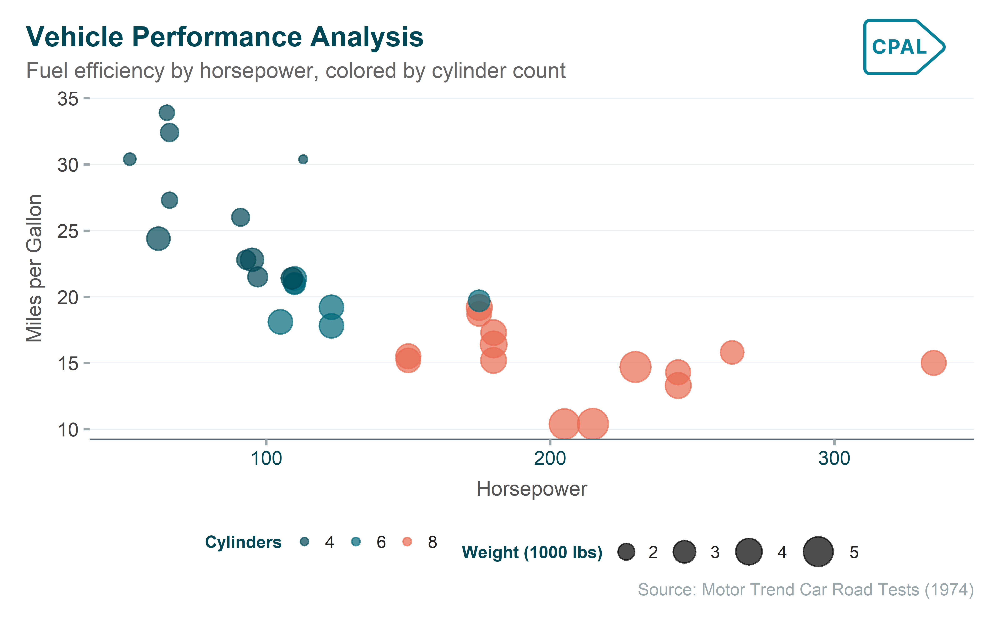

Consistent color usage is essential for creating professional, recognizable data visualizations. The cpaltemplates color system provides 25 functions for working with CPAL’s carefully designed color palettes in R and ggplot2. All colors are sourced from _brand.yml and designed for WCAG accessibility compliance, ensuring your charts are readable by users with color vision deficiencies.
Whether you’re creating a quick exploratory plot or a polished visualization for a report, these functions make it easy to apply CPAL branding consistently across all your R-based data products.
Primary Brand Colors
CPAL’s 6 core brand colors form the foundation of all palettes. These colors were carefully selected for brand recognition, accessibility, and versatility across different visualization types.
cpal_colors_primary()
Color
Hex Code
Use Case
Midnight
#004855
Dark backgrounds, headers, primary emphasis
Deep Teal
#006878
Primary brand color, links, info states
Coral
#E86A50
Accents, alerts, negative/error states
Sage
#5A8A6F
Success states, positive indicators
Slate
#5C6B73
Secondary text, borders, muted elements
Warm Gray
#9BA8AB
Neutral backgrounds, disabled states
Core Color Functions
These functions are your primary tools for accessing CPAL colors in R. Use them to retrieve color values for ggplot2 visualizations, Shiny apps, or any R-based graphics.
cpal_colors()
The main entry point for accessing any CPAL color or palette. This versatile function handles single colors, multiple colors, and complete palettes—making it the go-to choice for most color needs.
Get all primary colors
cpal_colors()
midnight
#004855
deep_teal
#006878
coral
#E86A50
sage
#5A8A6F
slate
#5C6B73
warm_gray
#9BA8AB
Get a single color by name
cpal_colors("coral")
coral
#E86A50
Get multiple specific colors
cpal_colors(c("midnight", "coral", "sage"))
midnight
#004855
coral
#E86A50
sage
#5A8A6F
Get a palette
cpal_colors("midnight_seq_5")
#E8F4F6
#88BECA
#28889E
#006D88
#004855
Limit number of colors
cpal_colors("main", n =3)
#004855
#E86A50
#5A8A6F
Reverse palette order
cpal_colors("midnight_seq_5", reverse =TRUE)
#004855
#006D88
#28889E
#88BECA
#E8F4F6
cpal_colors_extended()
Returns all 17+ colors including primary colors and shades. Useful when you need access to the full color palette for complex visualizations or custom color schemes.
cpal_colors_extended()
midnight
#004855
deep_teal
#006878
coral
#E86A50
sage
#5A8A6F
slate
#5C6B73
warm_gray
#9BA8AB
teal
#007A8C
gold
#B8860B
plum
#8B5E83
coral_dark
#C75540
neutral
#E8ECEE
midnight_1
#E8F4F6
midnight_2
#B8D9E0
midnight_3
#88BECA
midnight_4
#58A3B4
midnight_5
#28889E
midnight_6
#006D88
midnight_7
#004855
midnight_8
#002D38
success
#5A8A6F
warning
#D4A84B
error
#C75540
info
#006878
Viewing Palettes
Before choosing colors for your visualization, it helps to see what’s available. These functions let you explore and preview all CPAL palettes directly in R.
All Available Palettes
list_cpal_palettes()
Visual Palette Display
view_cpal_palettes()
All CPAL color palettes
Palette Types
Choosing the right palette type is crucial for effective data visualization. Different data types require different color approaches—using a sequential palette for categorical data (or vice versa) can mislead readers or obscure patterns in your data.
Categorical Palettes
Use for: Discrete data with distinct, unordered categories (e.g., regions, product types, demographic groups).
Categorical palettes use visually distinct colors that don’t imply any ordering or magnitude. Each category gets its own easily distinguishable color.
ggplot(mtcars, aes(x =factor(cyl), fill =factor(cyl))) +geom_bar() +scale_fill_cpal("main") +# Use cpal_colors("main", n = 3) for fewer colorslabs(title ="Count by Cylinder", x ="Cylinders", y ="Count") +theme_cpal() +theme(legend.position ="none")
Sequential Palettes
Use for: Continuous or ordered data where values progress from low to high (e.g., population density, income levels, temperature).
Sequential palettes progress from light to dark (or vice versa), allowing readers to intuitively understand that darker colors represent higher values.
ggplot(mtcars, aes(x = wt, y = mpg, color = hp)) +geom_point(size =4) +scale_color_cpal_c("midnight_seq_5") +labs(title ="Fuel Efficiency by Weight",subtitle ="Color shows horsepower",x ="Weight (1000 lbs)",y ="Miles per Gallon",color ="Horsepower" ) +guides(color =guide_colorbar(title.position ="top",barwidth =15,barheight =1 )) +theme_cpal()
Diverging Palettes
Use for: Data with a meaningful midpoint or neutral value (e.g., year-over-year change, survey responses from negative to positive, deviations from average).
Diverging palettes use two distinct hues that meet at a neutral midpoint, making it easy to see whether values are above or below the center.
# Create sample data with positive and negative changeschange_data <-data.frame(category = LETTERS[1:7],change =c(-15, -8, -2, 0, 5, 12, 20))ggplot(change_data, aes(x = category, y = change, fill = change)) +geom_col() +scale_fill_gradient2(low ="#E86A50",mid ="#E8ECEE",high ="#004855",midpoint =0 ) +labs(title ="Year-over-Year Change",x ="Category",y ="Change (%)" ) +theme_cpal() +theme(legend.position ="none")
ggplot2 Scale Functions
These functions integrate directly with ggplot2, letting you apply CPAL colors using familiar scale_* syntax. They work just like built-in ggplot2 scales but use CPAL’s branded color palettes.
Discrete Scales
Use scale_color_cpal() or scale_fill_cpal() when your data has distinct categories. The function automatically maps each category to a color from your chosen palette.
Show code
ggplot(mtcars, aes(x = wt, y = mpg, color =factor(cyl))) +geom_point(size =3) +scale_color_cpal("main_3") +labs(title ="Discrete Color Scale",color ="Cylinders" ) +theme_cpal()
Continuous Scales
Use scale_color_cpal_c() or scale_fill_cpal_c() when your data is numeric and continuous. The function interpolates smoothly across your chosen palette to represent the full range of values.
Show code
ggplot(faithfuld, aes(waiting, eruptions, fill = density)) +geom_tile() +scale_fill_cpal_c("midnight_seq_5") +labs(title ="Continuous Fill Scale") +guides(fill =guide_colorbar(title.position ="top",barwidth =15,barheight =1 )) +theme_cpal()

Color Interpolation
Sometimes you need a custom number of colors or a gradient between specific colors that isn’t covered by the standard palettes. These functions let you generate custom color sequences programmatically.
cpal_color_ramp()
Generate a smooth gradient between two CPAL colors. Useful when you need a specific number of steps or want to create a custom sequential palette.
Gradient from coral to midnight
cpal_color_ramp("coral", "midnight", n =7)
#E86A50
#C16450
#9A5E51
#745952
#4D5353
#264D54
#004855
Using color names from brand.yml
cpal_color_ramp("midnight_1", "midnight", n =5)
#E8F4F6
#AEC9CD
#749EA5
#39737D
#004855
cpal_color_gradient()
Create a gradient that passes through multiple colors. Perfect for custom diverging palettes or complex color schemes that need to hit specific color waypoints.
Three-color gradient
cpal_color_gradient(c("coral", "neutral", "midnight"), n =9)
#E86A50
#E88A77
#E8AB9F
#E8CBC6
#E8ECEE
#AEC3C7
#749AA1
#39717B
#004855
Color Validation (Accessibility)
Accessibility isn’t just good practice—it’s essential for reaching all audiences. These validation functions help you ensure your color choices meet WCAG (Web Content Accessibility Guidelines) standards, making your R visualizations readable for users with color vision deficiencies.
validate_color_contrast()
Check if two colors meet WCAG contrast requirements. Use this when placing text on colored backgrounds or ensuring data points are distinguishable.
# Check deep_teal on white (should pass AA)validate_color_contrast("#006878", "#FFFFFF")# Check with AAA standard (stricter)validate_color_contrast("#006878", "#FFFFFF", level ="AAA")# Midnight on white (high contrast)validate_color_contrast("#004855", "#FFFFFF", level ="AAA")
This function prints a detailed report showing which colors pass WCAG AA/AAA standards on white and dark backgrounds.
Choosing the Right Palette
Not sure which palette to use? This quick reference helps you match your data type to the appropriate CPAL palette. The goal is to choose colors that help readers understand your data, not just make charts look pretty.
Quick Reference
Data Type
Recommended Palettes
Categories (≤3)
main_3, binary
Categories (4-5)
main_4, main_5
Categories (6-8)
main_6, main
Sequential/Continuous
midnight_seq_5, midnight_seq_6
Diverging (with midpoint)
coral_midnight_5, coral_midnight_7
Binary comparison
binary, compare
Status indicators
status
Complete Example
Here’s a complete example showing how CPAL colors, scales, and themes work together in a typical R data visualization workflow. This pattern—data preparation, ggplot2 visualization, CPAL scales, and CPAL theme—is the foundation for all branded CPAL charts.
Show code
# Prepare datacar_data <- mtcars |>mutate(cylinders =factor(cyl),efficiency =ifelse(mpg >median(mpg), "High", "Low") )# Create visualizationp1 <-ggplot(car_data, aes(x = hp, y = mpg, color = cylinders, size = wt)) +geom_point(alpha =0.7) +scale_color_cpal("main_3") +scale_size_continuous(range =c(2, 8)) +labs(title ="Vehicle Performance Analysis",subtitle ="Fuel efficiency by horsepower, colored by cylinder count",x ="Horsepower",y ="Miles per Gallon",color ="Cylinders",size ="Weight (1000 lbs)",caption ="Source: Motor Trend Car Road Tests (1974)" ) +theme_cpal()cpaltemplates::add_cpal_logo(p1)

Next Steps
Now that you understand CPAL’s color system, explore these related guides: